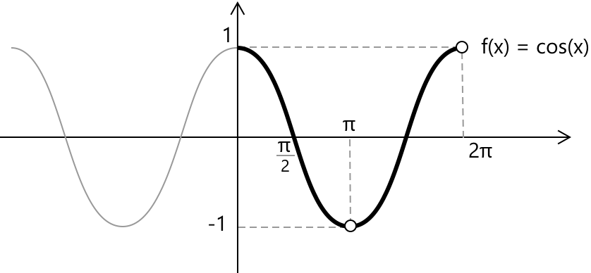

Функція косинуса
Функція косинус
Функція косинус \( f(x) = \cos(x) \) кожному куту \( x \), вираженому в радіанах, присвоює відповідне значення косинуса. Її графіком є періодична хвиля з періодом \( 2 \pi \) та амплітудою 1, що коливається між \(-1\) та \(1\). Функція \( f(x) = \cos x \) має всі дійсні числа у своїй області визначення, але її область значень становить \( -1 \leq \cos(x) \leq 1 \).

Разом із функцією синус вона представляє одну з фундаментальних моделей періодичних хвиль і широко використовується для опису циклічних явищ у фізиці, інженерії та математиці. Наприклад, у простому гармонічному русі у фізиці функція косинус часто з'являється в рівняннях для зміщення та прискорення, описуючи коливальну поведінку таких систем, як пружини та маятники.
Властивості
- Область визначення: \( x \in \mathbb{R} \)
- Область значень: \( y \in \mathbb{R} : -1 \leq y \leq 1 \)
- Періодичність: періодична за \( x \) з періодом \( 2\pi \)
- Парність: парна, \( \cos(-x) = \cos(x) \)
- Корені: \( x = \dfrac{\pi}{2} + n \pi, \quad n \in \mathbb{Z} \)
- Цілий корінь: \( x = \dfrac{\pi}{2} \)
- Точки максимуму та мінімуму: \( \cos(x) \) досягає свого максимуму \(1\) при \( x = 2k \pi \) з \( k \in \mathbb{Z} \) та свого мінімуму \(-1\) при \( x = \pi + 2k \pi \) з \( k \in \mathbb{Z} \).
Границі, похідні та інтеграли функції косинус
Фундаментальною границею, що містить функцію косинус, є: \[ \lim\limits_{x \to 0} \frac{1 – \cos(x)}{x} = 0 \]
Функція є неперервною та диференційовною для всіх дійсних чисел. Похідна дорівнює: \[ \frac{d}{dx} \cos(x) = -\sin(x) \]
Невизначений інтеграл: \[ \int \cos(x) dx = \sin(x) + c \]
Вичерпний огляд тригонометричних інтегралів, разом із найкориснішими методами перетворення та підстановки для обробки складніших випадків, доступний на сторінці про інтеграли тригонометричних функцій.
Альтернативна форма функції \( \cos(x) \) з використанням уявних чисел задається формулою Ейлера, де \( e^{ix} \) — це показникова функція з основою \( e \), а \( i \) — уявна одиниця: \[ \cos(x) = \frac{e^{ix} + e^{-ix}}{2} \]